/math-2fccdd06e4c2b79e4f65f2f532fdf9ec.png "n_{1}\!") sei der Umfang von Stichprobe 1 und
sei der Umfang von Stichprobe 1 und /math-fdad14c036fde9f986da06150b87a44c.png "x_{1}\!") die Anzahl der Ereignisse bzw. Erfolge. Dann kann der Stichprobenanteil 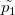 ausgedrückt werden mit: 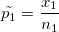.
die Anzahl der Ereignisse bzw. Erfolge. Dann kann der Stichprobenanteil 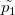 ausgedrückt werden mit: 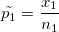.
sei der Umfang von Stichprobe 1 und die Anzahl der Ereignisse bzw. Erfolge. Dann kann der Stichprobenanteil 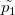 ausgedrückt werden mit: 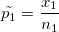.
Entsprechend ist der Umfang für eine andere Stichprobe /math-524b3b5be113e2ddfb80c81946f7acd9.png "n_{2}\!") und
und /math-32846ccc5f26d802a0fe5ea9bbe7f00d.png "x_{2}\!") ist die Anzahl der Ereignisse. Dann ist der Stichprobenanteil:
ist die Anzahl der Ereignisse. Dann ist der Stichprobenanteil: /math-bdf797b2281b2325c6b84e5fbbdd0419.png "\tilde{p_{2}}=\frac{x_{2}}{n_{2}}")
Inhalt |
/math-7b808e5178ceb5dc7d7cd3055dd492db.png "p_{1}\!") und seien die wahren Anteile der Grundgesamtheit für Stichprobe 1 und 2, und
und seien die wahren Anteile der Grundgesamtheit für Stichprobe 1 und 2, und /math-bd9eee3ffcc47aa2c4ff7032d9e24ee9.png "d_{0}\!") sei die hypothetische Differenz zwischen den Anteilen der Grundgesamtheit.
sei die hypothetische Differenz zwischen den Anteilen der Grundgesamtheit.
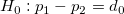 für beidseitigen Test
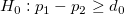 für einseitigen Test
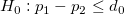 für einseitigen Test
Sie können einen Test auf Normal-Approximation durchführen mit den Annahmen: 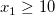 und 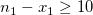, 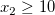 und 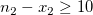.
Um den Test durchzuführen, berechnen Sie den Wert für /math-814b9f64b478b6caf94e723a0e6814c5.png "z\!") und 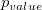:
und 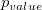:
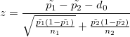 .
Ein besonderer Fall ist, wenn 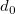 gleich Null ist. Origin kann eine gepoolte Schätzung von p für den Test verwenden, wenn Sie das Kontrollkästchen "gepoolt" aktivieren, um Folgendes zu tun:
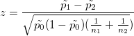 , wobei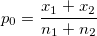
Die p-Werte für jede Hypothese sind gegeben durch:
, 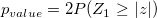 für den beidseitigen Test
, /math-10a0f892ce645224d3e01a17f2e69302.png "p_{value}=P(Z_{1}\le z)\!") für den oberen Test
für den oberen Test
, 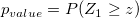 für den unteren Test
Für ein gegebenes Konfidenzniveau /math-378df00d12056b404d7d02aef9d8650b.png "1-\alpha") kann das Konfidenzintervall für den Stichprobenanteil erzeugt werden durch:
kann das Konfidenzintervall für den Stichprobenanteil erzeugt werden durch:
| Nullhypothese | Konfidenzintervall |
|---|---|
![\left[(\tilde{p_{1}}-\tilde{p_{2}})- Z_{\frac{\alpha}{2}}\sqrt{\frac{\tilde{p_{1}}(1-\tilde{p_{1}})}{n_{1}}+ \frac{\tilde{p_{2}}(1-\tilde{p_{2}})}{n_{2}}}, (\tilde{p_{1}}-\tilde{p_{2}})+ Z_{\frac{\alpha}{2}}\sqrt{\frac{\tilde{p_{1}}(1-\tilde{p_{1}})}{n_{1}}+ \frac{\tilde{p_{2}}(1-\tilde{p_{2}})}{n_{2}}}\right]](../images/Algorithm_(Two_sample_proportion_test)/math-ea62046992830b5407422a0bc50eb5e4.png "\left[(\tilde{p_{1}}-\tilde{p_{2}})- Z_{\frac{\alpha}{2}}\sqrt{\frac{\tilde{p_{1}}(1-\tilde{p_{1}})}{n_{1}}+ \frac{\tilde{p_{2}}(1-\tilde{p_{2}})}{n_{2}}}, (\tilde{p_{1}}-\tilde{p_{2}})+ Z_{\frac{\alpha}{2}}\sqrt{\frac{\tilde{p_{1}}(1-\tilde{p_{1}})}{n_{1}}+ \frac{\tilde{p_{2}}(1-\tilde{p_{2}})}{n_{2}}}\right]") | |
| 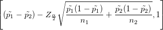 | |
| 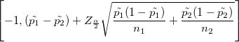 |
Fishers Exakter Test kann für alle Stichprobenumfänge verwendet werden, wenn /math-a6b4ba4f8e6e0c7aa62a6321e42f50c5.png "d_{0} \!") null ist. p(x) bezeichne die Wahrscheinlichkeit der hypergeometrischen Verteilung, wenn X=x.
null ist. p(x) bezeichne die Wahrscheinlichkeit der hypergeometrischen Verteilung, wenn X=x.
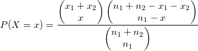
M bezeichne den Modus der hypergeometrischen Verteilung: 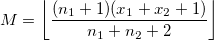
Die p-Werte für jede Hypothese sind gegeben durch:
/math-e8e42b6377357ab28f8d67401a32dcbb.png "H_0:p_{1}\ge p_{2}\!") , 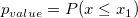
, 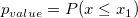
/math-2d65f2eb45f1ed6987af501d89e0c698.png "H_0:p_{1}\le p_{2}\!") , 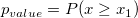
, 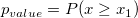
Wenn /math-9bc36a86a3c356596eaded763aafa716.png "H_0:p_{1}= p_{2}\!") :
:
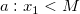: 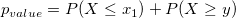
wobei y die kleinste ganze Zahl 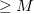 ist, so dass 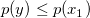.
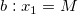
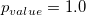
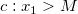
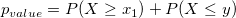
wobei y die größte ganze Zahl 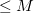 ist, so dass .